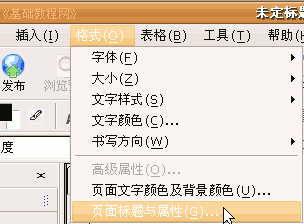
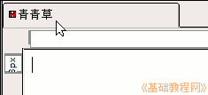
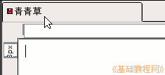
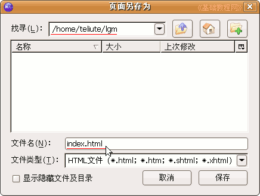
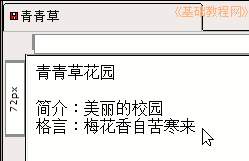
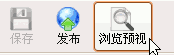

Nvu 操作基础教程
作者：Teliute 来源：基础教程网
新建网页 返回目录 下一课这一课，我们来学习怎样在Nvu中新建一个网页，我们将创建一个简单的个人主页，下面我们来看一个练习；
1、启动Nvu
1）点左上角菜单“ 应用程序－编程－Nvu”，就可以启动Nvu程序；
2）第一次启动时会出来两个小面板，点关闭即可，然后进入程序窗口中；
2、新建网页
1）点菜单“格式－页面标题和属性..”(在格式菜单的最下面)，出来一个对话框面板；

2）在面板中，输入标题“基础3”，作者写自己，下面语言是 zh-cn，方向是“从左到右”，编码是UTF-8，
检查一下然后点“确定”按钮，然后标签上就出来一个标题，红色图标是还没有保存；
 

3）点菜单“文件－保存”命令，出来一个另存为的对话框，
在上面找到自己的文件夹，在文件名那儿改成英文的 index.html 然后点保存按钮；

2、输入内容
1）在中间的工作区里点一下鼠标左键，左上角一个光标一闪一闪，可以输入文字了，
输入下面三行内容，输完一行后按一下回车键，输完后按Ctrl＋S组合键保存一下；

2）保存好以后，点上面工具栏里的“浏览预视”按钮，是一个放大镜图标，

看一下自己做的网页，稍稍还有些简单，后面我们会逐步学习修饰网页；
3）如果没有出来浏览器窗口，可能是Firefox没有关联好，可以在新立得里面安装一个Opera浏览器；
本节学习了在Nvu中创建网页的基本方法，如果你成功地完成了练习，请继续学习下一课内容；
本教程由86团学校TeliuTe制作|著作权所有
基础教程网：http://teliute.org/
美丽的校园……
转载和引用本站内容，请保留作者和本站链接。